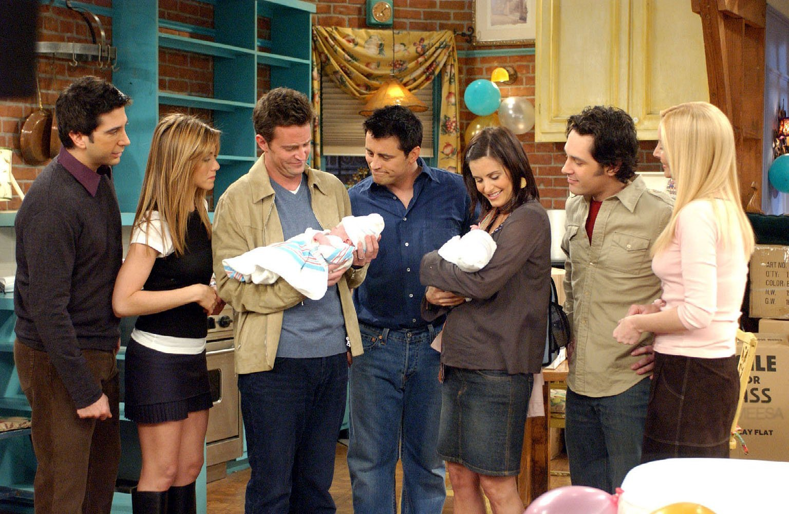

O relacionamento de Rachel e Joey dura apenas
três episódios na décima temporada. Ross e Charlie
também não progridem no relacionamento. Mike pede Phoebe novamente em casamento,
recebendo um sim como resposta. Eles se casam logo depois.
Chandler e Monica tentam adotar o bebê de uma mulher chamada
Érica, que está grávida e não poderá cria-lo. Eles também
decidem se mudar para o interior do estado.
No episódio final,
Érica dá a luz a gêmeos, um casal. Rachel consegue um novo emprego,
desta vez em Paris. Os cinco amigos organizam uma festa de
despedida, e ela se despede de todos separadamente, com exceção
de Ross, que se sente ignorado.
No último episódio da série, Ross descobre-se ainda amando Rachel,
e decide ir atrás dela no aeroporto para demove-la da ideia de ir
para Paris.
Melhores episódios:
- "Aquele em que o Ross Está Legal" (10x02)
- "Aquele com o Bolo" (10x04)
- "Aquele com o Ação de Graças Atrasado" (10x08)
- "Aquele em que Joey Fala Francês" (10x13)
- "O Último" (10x17/18)
